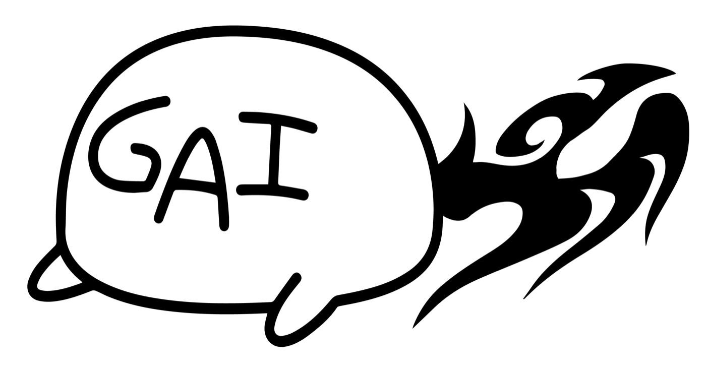

OPERATORS

OPERATOR / GAI
生貝 遼太（いけがい りょうた）
AI顧問／株式会社ＧＡＩＢＡＫＯ 代表取締役／AI羅深盤 運営
「AIで何ができるか」よりも「AIを使うべきかどうか」という判断を軸に、企業のAI活用を支援しています。
AI講師として実務レベルの活用講座を継続的に開催する一方、自身もゲーム制作、映像制作、業務資料の作成にAIを日常的に活用。うまくいった事例だけでなく、期待して試したものの採用を見送った経験も含めて共有できることを強みとしています。
「これはAIに任せなくていい」と
言える人でありたい。
CO-OPERATOR / YOSHIKI
佐々木 佳輝
株式会社ラティ 代表取締役／モデル・ライバー事務所 主宰／AI羅深盤 共同運営
「個人を輝かせる」
東京都豊島区に本社を置く株式会社ラティを2020年8月に設立。モデル・ライバー事務所を立ち上げ、登録者数500名のプロデュースに携わる。ライバー配信に加え、ドラマ出演、雑誌掲載、飲食店イメージモデル、地下アイドルデビューなど、所属者の活動領域を広げてきました。
コスプレ応援・オーディション代理店「Claps!」やセレクトショップも運営。所属タレントからのセカンドキャリア相談を契機に有料職業紹介免許を取得し、現在はキャリアアドバイザーとしても活動しています。
- 大学在学中に家庭教師の派遣業を開始
- 市役所勤務を経て、民間ベンチャー企業へ転職
- 2020年8月、株式会社ラティを設立
COMPANY
運営会社
株式会社ＧＡＩＢＡＫＯは、ゲーム・AI・アートに関する事業を行っています。AI羅深盤では、AIに関する情報提供だけでなく、参加者同士の対話と実験を通じて判断力を育てる場を運営しています。
- 商号
- 株式会社ＧＡＩＢＡＫＯ
- 代表取締役
- 生貝 遼太
- 法人番号
- 3030001139690
- 所在地
- 〒351-0023 埼玉県朝霞市溝沼7-5-16